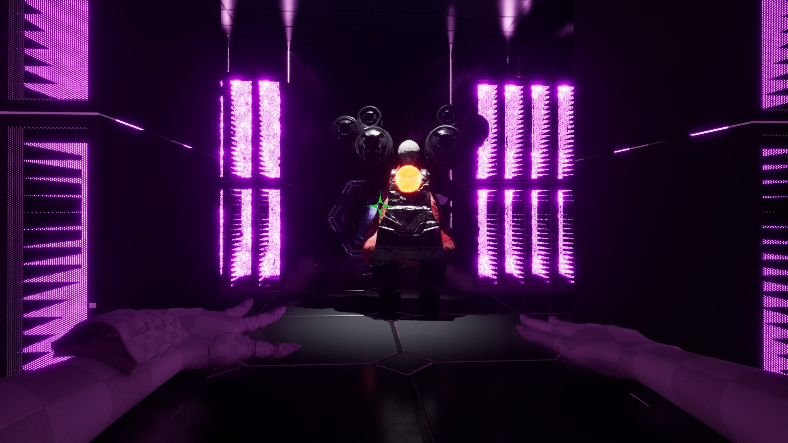
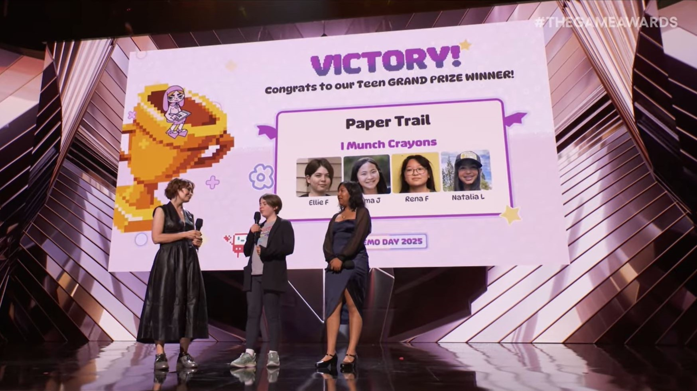
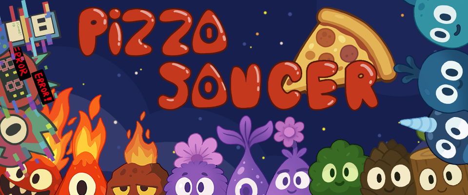
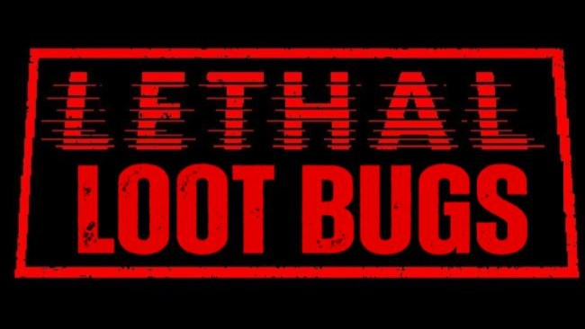
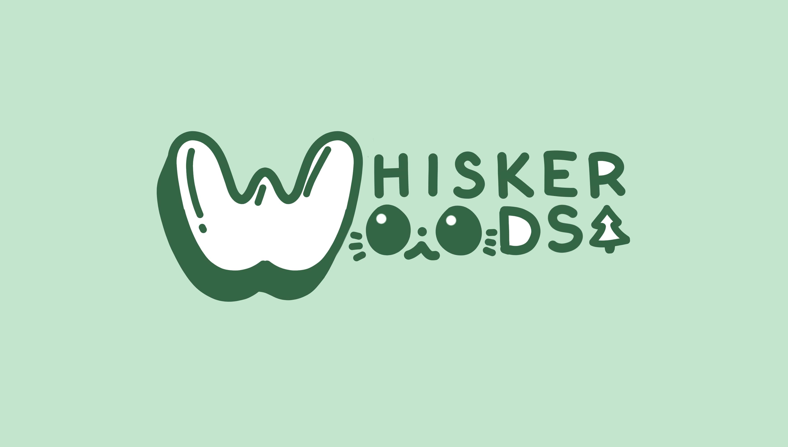
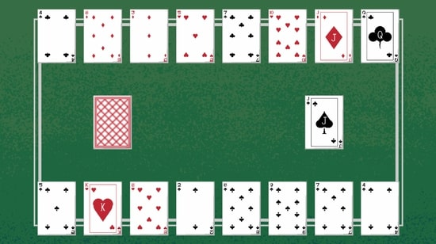

Acted as Tech Lead for a 13-member Agile team to develop a semester-long project in Unreal. InterLinked is a 3D first person action-adventure where you serve your divine master by killing an infection taking over its systems.

Acted as producer and developer for a 4-person team of young girls to create a rapid prototype in Unity. Paper Trail is a 2D puzzle game where you play as 7 year old Frankie, escaping her drawings that have come to life.

Acted as Developer within an Agile team, implementing core gameplay mechanics in Unity, on a 5 person team over the course of a semester. Pizza Saucer is a 2D cooking simulator where, by talking to aliens, you find your way home.

Acted as developer on a team of 3 for a gameplay mod for Lethal Company, programming complex AI behaviors for Hoarder Bugs. This mod successfully split Hoarder Bugs into factions of guarders, attackers, and looters.

Acted as Producer and Developer for a 4-person team of young girls to deliver a rapid prototype in Unity within a strict two-week timeline. Whisker Woods is a 2D Farming Sim where your goal is to take revenge on a pesky neighbor.

Solely designed, developed, and illustrated a digital recreation of the classic card game using Unity. Crazy Eights is a classic card game where the goal is to be the first player to discard all of your cards.